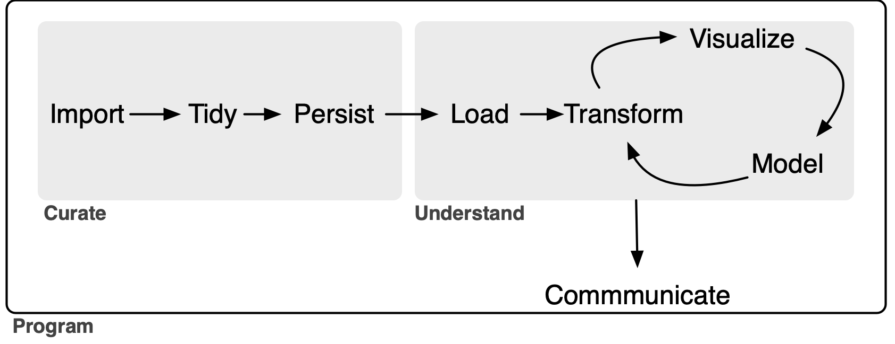

I recently (Gow, 2026) proposed an extension to the data science “whole game” of R for Data Science (Wickham et al., 2023). In Gow (2026), I used Australian stock price data to illustrate the data curation process and, in this note, I use US bank “Call Report” data as a second illustration. In effect, I provide complete instructions for building a high-performance data library covering all Call Reports data provided by the FFIEC Bulk Data website that can be constructed in less than ten minutes on fast hardware (or a couple of hours on an older machine). I also give a few brief demonstrations of how to use the curated data, with examples for both R and Python. I conclude by discussing challenges encountered during processing and offering some observations about AI and data curation.
My extension of the data science “whole game”—depicted in Figure 1 below—adds a persist step to the original version, groups it with import and tidy into a single process, which I call Curate. As a complement to the new persist step, I also add a load step to the Understand process.1
In this note, as in Gow (2026), I focus on the data curation (Curate) process. My rationale for separating Curate from Understand is that I believe that thinking about these separately clarifies certain best practices in the curation of data. In Gow (2026), I used the notion of a service-level agreement to explain how the two processes can be delineated. My conception of Curate (Gow, 2026) encompasses some tasks that are included in the transform step (part of the Understand process) of Wickham et al. (2023).
While I will argue that even the sole analyst who will perform all three processes can benefit from thinking about Curate separate from Understand, it is perhaps easiest to conceive of the Curate and Understand processes as involving different individuals or organizational units of the “whole game” of a data analysis workflow. In Gow (2026), I used the idea of a service-level agreement to delineate the division of responsibilities between the Curate and Understand teams. In effect, I will act as a self-appointed, single-person, unpaid Curate team and I imagine potential users of call report data as my Understand clients.
Tip
This note was written and rendered with Quarto using RStudio, an integrated development environment (IDE) for working with R. The source code for the original note is available here and the latest PDF version is available here.
In writing the R portions of this note, I used the packages listed below.2
I have not submitted
ffiec.pqto CRAN. To installffiec.pq, first install thepakpackage usinginstall.packages("pak").3 Then, usepakto installffiec.pqby typingpak::pak("iangow/ffiec.pq")in the R console.For the Python portion of this note, I believe that you need
polars,pandas, andffiec_data_collector(if you use Python to get the zip files). In generating some plots, I useseabornandmatplotlib, but I don’t include the associated code for reasons of space. Sopip install polars pandas ffiec_data_collectorprobably suffices.
1 Call Reports
According to its website, the Federal Financial Institutions Examination Council (FFIEC) “is an interagency body … focused on promoting consistency in examination activities [related to United States financial institutions].” The FFIEC “does not regulate financial institutions [and its] jurisdiction is limited to prescribing uniform principles, standards, and report forms for the federal examination of financial institutions and making recommendations to promote uniformity in the supervision of financial institutions.”
One of the services provided by the FFIEC is its “Central Data Repository’s Public Data Distribution website. Through this site you can obtain Reports of Condition and Income (Call Reports) for most FDIC-insured institutions. The information available on this site is updated to reflect the most recent data for both prior and current periods. The earliest data provided is from March 31, 2001.”
Many academic studies use Call Report data. For example, Kashyap et al. (2002, p. 52) states “our data come from the ‘Call Reports,’ the regulatory filings that all commercial banks having insured deposits submit each quarter. The Call Reports include detailed information on the composition of bank balance sheets and some additional data on off-balance-sheet items. These data are reported at the level of the individual bank.”
While raw data are offered by the FFIEC, some work is required to arrange the data into a form amenable to further analysis. In other words, some curation of the data is required.
Several commercial data providers offer the FFIEC data in a curated form, but accessing those requires an institutional or individual subscription. It appears that the Federal Reserve Bank of Chicago once provided a curated data set on its website, but no longer does so. WRDS provides Call Report data extracted from the same sources I used as part of its basic subscription. Of course, no commercial providers of the data provide the source code used to transform the raw data into the form they deliver it in.
Other services provide “API wrappers” that allow users to access the data via the FFIEC API, but this approach is best suited to real-time feeds of small amounts of data. Collation of the data into a single local, comprehensive repository using this approach seems impractical given the scale of the data.
Regardless of the availability of paid curation services, in this note I will imagine that such sources either do not exist or are unavailable to my hypothetical Understand clients and illustrate how one can curate Call Reports data from the FFIEC source.
1.1 Getting the raw data
The FFIEC Bulk Data Download site provides the Call Report data in two forms: zipped tab-delimited data files and zipped XBRL data files, one for each quarter. The package-site article Getting the raw Call Report data shows how to use Python and ffiec_data_collector to download these files into RAW_DATA_DIR/ffiec.
1.2 Processing the data
With the raw data files in hand, the next task is to process these into files useful for analysis. For reasons I will discuss below, I will process the data into Parquet files. The Parquet format is described in R for Data Science (Wickham et al., 2023, p. 393) as “an open standards-based format widely used by big data systems.” Parquet files provide a format optimized for data analysis, with a rich type system. More details on the Parquet format can be found in Chapter 22 of Wickham et al. (2023) and every code example in Gow and Ding (2024) can be executed against Parquet data files created using my db2pq Python package as described in Appendix E of that book.
The easiest way to run the code I used to process the data is to install the ffiec.pq R package I have made available on GitHub. By default, the ffiec.pq package assumes that the raw data files can be found in a directory ffiec below the raw data repository and that processed data should be written to a directory ffiec below the processed Parquet repository. If RAW_DATA_DIR or DATA_DIR is not already set, the package will ask for those locations the first time an interactive R session needs them and can store the answers in .Renviron. The processed files will occupy about 3 GB of disk space, so make sure you have room for these there.
With the directories resolved, I can load my package and run a single command ffiec_process() without any arguments to process all the raw data files.4 This takes about five minutes to run (for me):
results <- ffiec_process(use_multicore = FALSE) |> system_time()Note that, behind the scenes, the ffiec_process() extracts the data in two phases. In the first phase, it processes the data for each schedule for each quarter into Parquet file. This results in 3,713 Parquet files. In the second phase, ffiec_process() proceeds to organize the 3,713 schedule-and-quarter-specific Parquet files by variable type to facilitate working with the data. Once the data have been organized, the schedule-and-quarter-specific Parquet files are discarded.
The results table returned by the ffiec_process() function above reflects the outcome of the first phase, as that is when any problems arising from malformed data are expected to arise. If there were any issues in reading the data for a schedule in a quarter, then the variable ok for the corresponding row of results will be FALSE. We can easily confirm that all rows have ok equal to TRUE:
results |> count(ok)The results table also includes the field repairs that we can inspect to determine if any “repairs” were made to the data as it was processed in the first phase. As can be seen, a minority of the 3,713 first-phase files needed repairs. I discuss these repairs in more detail in the article on Call Report curation details.
Gow, I.D., 2026. Data curation and the data science workflow.
Gow, I.D., Ding, T., 2024. Empirical research in accounting: Tools and methods. Chapman & Hall/CRC. https://doi.org/10.1201/9781003456230
Kashyap, A.K., Rajan, R., Stein, J.C., 2002. Banks as liquidity providers: An explanation for the co-existence of lending and deposit-taking. Journal of Finance 57, 33–63. https://doi.org/10.1111/1540-6261.00415
Wickham, H., Çetinkaya-Rundel, M., Grolemund, G., 2023. R for data science. O’Reilly Media, Sebastopol, CA.